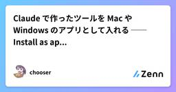

Zennの「AI」のフィード
フィード

claude doctorを実測する：CLIの接続診断と、セッション内でやるprompt-audit
Zennの「AI」のフィード
claude doctor を実際に叩いて確かめた結果から書きます。 ターミナルの claude doctor（CLI）は、インストール状態とAPI接続の診断を返す。サインインなしでも実行できる CLAUDE.mdの監査（prompt-audit）はCLIでは走らない。claude doctor prompt-audit と打っても、返ってくるのは標準の診断出力だけだった（v2.1.332で実測） 監査を含む完全な診断は、Claude Codeのセッションの中で /doctor を実行する。公式ヘルプにも「For a full checkup that can also fix issu...
6時間前

AIエージェントにモデリングからMakerWorld登録まで任せて、スマホから3Dプリントする
Zennの「AI」のフィード
歯磨き粉チューブをケースの中で立てるために、穴が3つ空いたスペーサープレートを AI エージェントの Muse に作ってもらった。Muse がモデリングから MakerWorld への仮登録まで進め、最後に自分がスマホの Bambu Handy から A1 mini で印刷を開始した。 面白かったのは、使う道具も手順も、ほとんど指示していないこと。OrcaSlicer を使うことも、Muse が自分で決めていた。 Muse は Meta のパーソナル AI エージェント。チャットでやりたいことを伝えると、専用の Linux 環境やブラウザーを使って、複数の手順が必要な作業を進めてくれる。...
6時間前

AI時代のセキュリティ地図 ― 5つの制御点で「何が変わり、何が変わらないか」を整理
Zennの「AI」のフィード
本記事は個人の見解であり、所属する組織の公式見解ではありません。また、AI Agent向けセキュリティ製品のカテゴリ名や定義はベンダー・調査会社ごとに異なり、市場は形成途上です。記載内容は2026年11月時点の整理であり、今後変わる可能性があります。 AI Agentが社内に入り込み、攻撃者もAgentを使い始めました。「AI向けのセキュリティ製品が次々に出てくるが、既存の製品とどう違うのか」「全部入れ替えるのか、足すだけで済むのか」という疑問を持つ方は多いと思います。 本記事では、従来のセキュリティ製品の地図を出発点に、AI Agent時代に何が変わり、何が変わらないのかを整理します。...
6時間前

AI に10分の発表を作らせたら、原稿は5分ぶんで、スライドは1枚100字だった。人の資料から作った手順で比較した
Zennの「AI」のフィード
AI エージェントに「このメモから、来週の月例会で10分話す発表を作って。スライドと原稿を」と依頼すると、見た目の整った .pptx と原稿が返ってきます。私はこれを3回試し、原稿は3回とも 1,300〜1,600 字でした。1分に約 300 字で話すとすると、約5分ぶんです。聞き手に一番関係のある話は、3回のうち2回、発表の後半か最後にありました。 原稿がすでにある場合も、スライドには別の癖が出ます。同じ10分の原稿から作らせた .pptx は、1枚の文字が平均 100 字ほどで、紺と赤の数字のカードが並ぶ、どこかで見た形になりました。そこで、話す発表の組み立て方と、人が作った資料を測...
7時間前
ルールを増やすな、検証を自動化しろ
Zennの「AI」のフィード
CLAUDE.mdの一番目立つ場所に「xxx/api/drizzle/配下のSQLは絶対に編集しないこと」と書いた日の夜、私はClaude Codeに修正を頼んで、コーヒーを淹れに席を立ち、数分後に戻ると、画面には 「0001.sqlを直接書き換えて直しました」 という無邪気なAIからの報告が表示されていました。 それを見た瞬間カッとなりましたが、握ったこぶしの行き先がわからず、とりあえず深呼吸 スーハー、すぅーはぁ〜 あんなにハッキリ「触るな」と書いたのにどうして無視するのかと頭を抱え、悔しくて設定を見直すと、CLAUDE.mdが参照していた@docs/conventions.mdはと...
7時間前

AIに「勝手に決めたこと」を白状させる：実装から逆算する設計補助の手法 1
1
Zennの「AI」のフィード
AIを用いたシステム開発において、出力された成果物が期待通りでなく残念な気持ちになった経験のある人は少なくないと思う。 昨今のLLMはいずれも極めて優秀なコーディング能力を有するため、プロンプトが完全なものであればほぼ無欠と言っていいコードを出力として示すはずである。 そうならない原因の一部は、入力された仕様が十分なものでなく、結果としてAI側で実装時にアドホックな判断を繰り返している点にある。 例えば数値計算の結果を丸めるために四捨五入するか、切り捨てるか、などといった粒度の細かい要件はAIに与える初回の指示からは漏れやすい。 しかし金額計算を扱う業務基幹システムなどであれば非常に優先...
7時間前

GitHub Actionsは成功なのにAI新聞が発行されない：6回の実行ログから学んだこと
Zennの「AI」のフィード
個人開発しているAI最前線新聞（AI FRONTIER）では、公式発表を収集し、日本語の記事を自動生成する仕組みを開発しています。 Web: GitHub: 前回は月額0円を目指す構成と、安全に発行を止める設計を紹介しました。 今回は、2026年11月26〜28日の実行ログを振り返り、GitHub Actionsの成功とプロダクトの成果を分けて観測する必要性を整理します。 日次発行ワークフローには、候補を取得して記事を生成し、品質基準を通過した場合だけ新号を作る仕組みがあります。 全候補が保留の場合、既存号を維持して正常終了します。そのため、Actionsの緑色のチェックだけでは新号の発...
7時間前

Claude で作ったツールを Mac や Windows のアプリとして入れる ── Install as app の入れ方と消し方
Zennの「AI」のフィード
上原正吉（EarthLink Network Co., Ltd.）。AI会社・AI社員による業務自動化と、人の逐次介入なしに24時間自動開発を回す仕組みを自社で実践しています。開発ノウハウと具体的な設定方法、運用して分かった改善点を公開しています。 Claude のデスクトップアプリに、会話で作ったアーティファクトを Mac や Windows のアプリとして入れる「Install as app」がベータ版で入りました。自社の Mac で記事を書く時の集中タイマーを作り、入れて、開いて、閉じて、消すまでを試し、Windows の手順はヘルプ記事から 1 つの節にまとめました。 会話で作っ...
7時間前

月額0円を目指してAI新聞の自動発行システムを開発してみた
Zennの「AI」のフィード
「AIって面白い」と感じる人を増やしたい。そんな思いから、AI最前線新聞（AI FRONTIER）を個人開発しています。 Web: GitHub: 今回は、月額0円を目指した自動発行の設計と、品質基準を満たさない記事を公開しない仕組みを紹介します。自動発行は開発・検証段階で、無料運用の実績を保証するものではありません。 公式発表を根拠にする。 根拠のない情報を公開しない。 無料枠を超えてまで発行しない。 改修はPRで検証し、人間が承認する。 GitHub Actionsが公式情報を収集し、根拠となる原文を選択します。選択した原文を使って日本語の記事を生成し、プログラムと別のAIレビュー処...
7時間前

M5 ProでWhisper large-v3を99.5倍速に：whisper.cppの約8倍速いSwift＋Metal 4エンジン
Zennの「AI」のフィード
Apple Silicon Mac で Whisper をローカル実行する Swift ライブラリ兼 CLI の MetalWhisperM5 を作りました。 Apple M5 Pro で ggml-large-v3-q5_0.bin（ビーム幅5）を動かしたところ、10分38秒（637.933秒）の英語音声を 6.409秒 で文字起こしできました。実時間の 99.531倍速 です。同じ音声・モデル・ビーム幅で whisper.cpp を走らせると whisper-cli が50.925秒、whisper-server が51.030秒かかるため、約8倍の差がついています。 外部の Swi...
8時間前

Codex・Claude Code・Antigravity で使えるモデル一覧と位置づけマップ（2026年11月時点）
Zennの「AI」のフィード
AI コーディングツールとしてよく使われる Codex、Claude Code、Google Antigravity の3つについて、2026年11月時点で利用できるモデルを整理しました。 まずは3つのツールで使える主要モデルを、推論能力と想定消費トークン数（コスト・クォータの重さ）の2軸でマッピングした全体図です。 横軸：複雑な開発タスクでの想定消費トークン数（対数スケール） 公式に「1タスクあたりの消費トークン数」という単一の数値が公開されているわけではないため、以下の3つの要素を掛け合わせた相対的な重さ（クォータ・コスト消費量）を目安に配置しています。 出力 API 単価（ベースコ...
8時間前
緑で残った変異を、merge-baseで当て直して仕分ける
Zennの「AI」のフィード
上限が5であることを守りたい処理でも、5件まで通ることしかテストしていなければ、上限を誤って6へ変えてもテストは通ります。6件目を拒むことまで確かめているかは、元のコードでテストが通っただけでは分かりません。 AIエージェントがPRを出す前に、こうした違いをテストが拾えるか、実装を1か所ずつ意図的に変えて確かめています。この変更を変異、変更後にテストが反応するか調べる方法を変異テストと呼びます。失敗を期待したテストが通れば、その変異は緑で残ります。 実物のデータを広く調べる担当を置くと、緑で残る変異が数十〜百数十件出ることがありました。あるPRでは、AIエージェントが緑の変異を1件ずつm...
9時間前

第30話 Case Fileテーマの配色と反映経路
Zennの「AI」のフィード
画像は AI 生成のイメージです Shelly はネイティブ側でターミナルを描画するアプリで、Case File の初期追加では、テーマを選んでも主要な画面の見た目が変わらない問題があった。 2026-09-16 の cbc4f6c88 では、主要な画面を制御する別系統のプリセットに Case File を追加し、独立した UI フォント選択も実装した。 対象となるのは、設定画面の選択と表示の反映先をどう照合するか、という開発上の問いである。 色の定義を増やすことと、その色を画面が読み取ることは、当時の Shelly では別の実装範囲だった。 さらに、切替時のブートフラッシュは実際の処理...
9時間前

Claude Code の設定をダイエットした話 — 常駐させるのは目次だけにする
Zennの「AI」のフィード
Claude Code を毎日使っていると、設定は少しずつ育ちます。 「この作業ではこうしてほしい」「このプロジェクトではこの手順で」というお願いが増えるたびに、CLAUDE.md に 1 行、また 1 行と足していく。Skills も同じで、便利だと思った手順を書いておくと、あとから自分もエージェントも助かります。 気づいたら、自分の設定（claude-config というリポジトリで管理しています）は、だいぶ立派な体格になっていました。 問題は中身の正しさではなく、読み方でした。 ルールをまるごと常駐させたり、大きな Skill を一括で読み込んだりする形にしていたので、今回の作業に...
10時間前

Someone Opened Links From "Zero Data Retention" Prompts Days Later
Zennの「AI」のフィード
Say you paste an error log into a coding agent. Somewhere in that log is a staging URL with a token in the query string. You don't worry about it, because you picked a provider with the "Zero Data Retention" label. The prompt gets processed and thrown away. That's the deal. On November 21, some O...
10時間前

AIエージェントの費用台帳では、「0円」と「未計測」を分ける
Zennの「AI」のフィード
AIエージェントの費用画面にゼロが並んでいても、安く動いているとは限らない。リクエストは成功したが、単価が設定されていなかった。あるいは、別経路の呼び出しが台帳に届いていない。どちらも金額だけでは見落とす。 費用をタスク単位で管理するなら、足し算の前に、何を数えていて、何を取りこぼしているかを確かめる必要がある。 Kong AI Cost Managementは、AI Gatewayが報告したリクエストごとの費用を記録する。ただし、実行時にモデルの価格がなければ表示は$0になる。費用が省略された場合と、ゼロが報告された場合は同じように保存され、後から価格を設定しても過去の記録額は変わらな...
10時間前

「エージェントの権限」ではなく「実行の境界」で守る：AIエージェント時代のサンドボックス設計メモ
Zennの「AI」のフィード
AIエージェントの安全性というと、プロンプトインジェクション対策や権限の最小化が語られがちです。もちろん大事ですが、もう一段下の層、実行の境界も同じくらい重要だと感じています。 このメモでは、その境界の置き方を整理し、最後に公式ドキュメントどおりの手順で Firecracker microVM のサンドボックスを起動するところまで書きます。 私は Sandscale の創業メンバーの Vakeesh です。利益相反があるので、先に書いておきます。 コーディングエージェントは、コードを書くだけでなく、人間がレビューする前に実行することがあります。ツール呼び出しも同様です。そのコードを、共有...
10時間前

【2026年】写真1枚で音声付きバイラルAI動画＆公開MCPサーバーを作った設計メモ
Zennの「AI」のフィード
短いバイラル動画（Shorts / Reels / TikTok）を AI で生成する際、多くのユーザーがつまずくのは 「プロンプト設計の難しさ」 と 「映像と音声のズレ（リップシンク・効果音同期）」 です。 この課題を解決するため、写真1枚をアップロードするだけで、プロンプト不要・音声付きでショート動画を自動生成できるテンプレート型サービス Memeo AI と、外部エージェントからテンプレート検索や生成フローへ接続できる Memeo 公開 MCP サーバー を設計・公開しました。 本記事では、テンプレート抽象化の設計方針、音声同期パイプライン、MCP（Model Context Pr...
10時間前

【個人開発】AIと並行開発するカンバン拡張作った
Zennの「AI」のフィード
個人開発してると、今どれをAIに任せててどれが自分の確認待ちかすぐわからなくなるので、VSCode向けの拡張機能として、ローカルのmdファイルで動くシンプルなカンバンボード作りました。真名は「カンバン・カンタン・カンターン」です。 1タスク=1mdにしてAIに直編集させ、人間はボードで動かします。inbox → todo → plan（AIの方針待ち） → doing（人間OKして作業中） → feedback（確認待ち） → done みたいにターンを回していきます。VSCodeの拡張機能なので、mdファイル自体は単純にエディタで記入しています。 特に新規性もなく、そういうツールはいく...
10時間前

AIが出した改善案を、ハーネスに入れる前に
Zennの「AI」のフィード
開発が一区切りついたとき、次の仕事にも持ち越せそうな学びが四つ出てきました。全部をハーネスに書き足す前に、私はCodexのエンジニアリング役、イーロンさんに見てもらいました。それぞれ、次の仕事の何を変えられるのか。 決まったのは、既存の資料に検証例を一つ足すことでした。ここでいうハーネスは、AIと仕事をするときに使う判断基準や検証例、どの役が何を判断するかまで含めた仕組みです。 私はイーロン・マスクさんの仕事の進め方が好きで、ものを作るときによく参考にしています。なかでも、本人がエンジニアリングの原則として話している、この順番です。 要求を疑う いらない部品や工程を削る 残ったものを単純...
10時間前